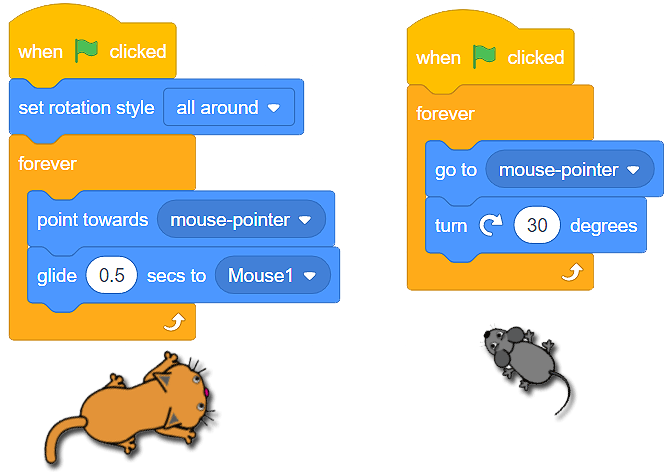

Движение¶
Вече се запознахме с потребителския интерфейс на Скрач, научихме се как да създаваме спрайтове и да определяме тяхната позиция на сцената. Сега е идеалният момент да научим как да ги движим чрез използването на команди (блокове) от категорията Движение. Тези блокове ще ни позволят да създаваме прости игри и анимации.
Има 3 вида блокове, които можем да използваме, за да движим спрайта:
Блокове за абсолютно движение;
Блокове за относително движение;
Блокове за други движения.
Блокове за абсолютно движение¶
В категорията Движение има 4 блока, които позволяват абсолютно движение.

Ще използваме тези блокове, когато трябва да програмираме спрайта ни да се движи по посока на специфична локация (точка) на сцената.
Котката гони мишката…
Котката се намира в центъра на сцената, а мишката е в точката (x:150 y:100).

Припомняме, че сцената е правоъгълна повърхност, широка 480 пиксела и висока 360 пиксела. Центърът има координати (x:0 y:0).
Ако искаме котката да хване мишката, можем просто да използваме блока  .
.

Ако искаме гоненицата да продължи по-дълго, можем да използваме блока . С този блок котката ще се плъзка 1 секунда от точка (x:0 y:0) до точка (x:150 y:100).).
Използвайки блоковете  и
и  можем да направим да изглежда сякаш котката бавно се промъква към мишката:
можем да направим да изглежда сякаш котката бавно се промъква към мишката:

Винаги можем да видим настоящата позиция на спрайта (моментните стойности на х: и у:) под сцената в листа на спрайтовете.

- Програма A
- Браво!
- Програма B
- Хм.. Препоръчваме ти да прочетеш вйнимателно урока за позицията на спрайта на сцената.
Q-5: Анализирай позицията на мишката, показана на фигурата по-долу, и избери програмата, която ще позволи на котката да хване всичките мишки.

Така, чрез използването на блоковете за абсолютно движение показваме на спрайтовете точно къде трябва да отидат на сцената.
Блокове за относително движение¶
Относителното движение не се определя от локацията, в която спрайтът трябва да отиде, а от настоящата позиция на спрайта.
В категорията Движение имаме на разположение няколко блока, които позволяват относително движение.

В примера, при който котката гонеше мишката, знаехме точната локация на мишката (точката, в която се намира). Ситуациите, при които не знаем разположението на спрайта, са по-често срещани. При тези случаи ще използваме блокове за относително движение, за да движим спрайтовете.
Когато става въпрос за относително движение, е важно спрайтът да се насочи в правилната посока. Постигаме това чрез влачене на стрелката около кръга на блока  .
.
Добре е да се знае, че посока към 0 представлява нагоре, към 90 – надясно, към 180 – надолу, към -90 – наляво.

Винаги можем да видим настоящата посока на спрайта под сцената в листа на спрайтовете в полето Посока.
- Посока 90 (надясно) Позиция (x:50 y:-100)
- Анализизрайте програмамта отново. Обръщането на спрайта с 90 градуса промени ли неговата посока?
- Посока 180 (надолу) Позиция (x:50 y:100)
- Браво!
Q-6: Анализирай програмата, представена във фигурата, и избери посоката, която според теб има спрайта, какво и каква ще бъде позицията му след като края на действието на програмата.

Така, чрез използването на блокове за относително движение казваме на спрайта накъде да се насочи и движи относително към настоящата му позиция.
Блокове за други движения¶
В категорията Движение има още 4 блока на наше разположение, които позволяват на спрайта да се движи.

Сцената е ограничено пространство. Когато спрайтът достигне ръба на сцената, за него ще бъде естествено да се обърне и да продължи да се движи в другата посока. Ще осъществим това движение на спрайта чрез използването на блока  . Също така ще решим как ще продължи да се движи спрайтът. Ако вътре в блока the
. Също така ще решим как ще продължи да се движи спрайтът. Ако вътре в блока the  определим начина на ротация на спрайта да е изцяло, той ще продължи да се движи наопаки. Това няма да се случи, ако от падащото меню на блока изберем опцията ляво-дясно
определим начина на ротация на спрайта да е изцяло, той ще продължи да се движи наопаки. Това няма да се случи, ако от падащото меню на блока изберем опцията ляво-дясно  .
.

Винаги можем да видим настоящия начин на движение на спрайта под сцената в листа със спрайтовете – в полето Посока (Direction).
Нека се върнем към спрайтовете:  и .
и .
Ако не знаем точната позиция на мишката, а искаме котката да е насочена към нея, можем да използваме блока  . Просто трябва да изберем Мишката спрайт
. Просто трябва да изберем Мишката спрайт  от падащото меню и проблемът е решен.
от падащото меню и проблемът е решен.
Ще ти покажем как последните два блока работят в следния пример.
Котката преследва мишката…
Котката преследва мишката, плъзгайки се към нея. Мишката непрекъснато се обръща и се движи към стрелката, която местим по сцената.
Над всеки от спрайтовете има текствове, които правят възможно описаното поведение.
 Подобри програмата, показано по-горе, добавяйки още един спрайт – ябълка. Направи така, че мишката да гони ябълката, а котката да гони мишката. Направи така, че ябълката да се движи по стрелката (която ние контролираме), мишката да се движи по ябълката и котката да се движи по мишката.
Подобри програмата, показано по-горе, добавяйки още един спрайт – ябълка. Направи така, че мишката да гони ябълката, а котката да гони мишката. Направи така, че ябълката да се движи по стрелката (която ние контролираме), мишката да се движи по ябълката и котката да се движи по мишката.

Possible solution: